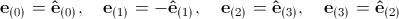
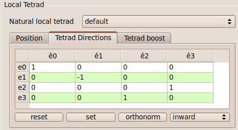
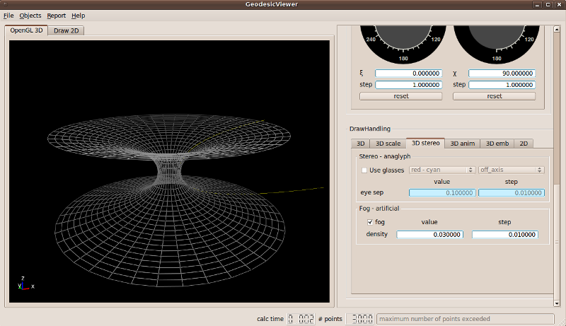
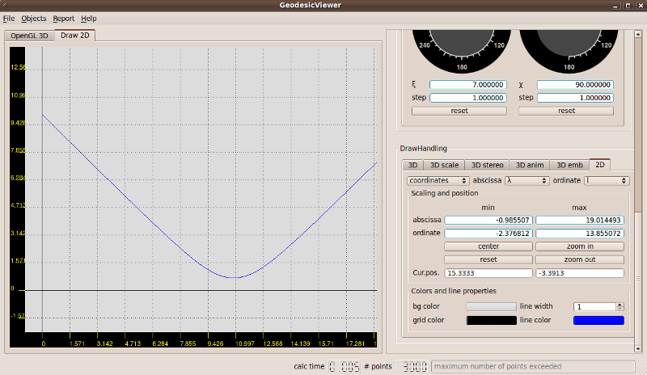

- Start the GeodesicViewer...
If you directly come from the first tutorial, reset the GeodesicViewer. For that, click on the File menu and choose 'Reset'.
- Choose the space-time metric...
In the Metric tab of the Metric/Integrator/Constants window select 'MorrisThorne'. As the Morris-Thorne metric is defined in spherical coordinates, the GeodesicViewer transforms the spherical coordinates into pseudo-Cartesian coordinates via
x=r*sin(ϑ)*cos(φ), y=r*sin(ϑ)*sin(φ), z=r*cos(ϑ). In the pseudo-Cartesian representation, r is replaced by the proper radial coordinate l.
- Set the initial position and the local reference frame...
The predefined initial position for the Morris-Thorne space-time reads t=0, l=10, ϑ=π/2, φ=0, and we will keep these parameters here. For the local reference frame, however, we do not use the natural local tetrad as is but re-order the basis vectors in the following way:
.
To realize this re-ordering, go to the Tetrad Directions tab within the Local Tetrad window. Now, modify the table as shown below and press the 'set' button, or click on the combo box in the lower right corner and select 'inward' instead of 'standard'.

The advantage of this re-ordering is, that if we change the initial direction angle ξ, the light-like geodesic stays in the ϑ=π/2 surface, which is crucial for the embedding diagram representation.
- Change representation type to embedding diagramm...
To change the presentation from pseudo-Cartesian coordinates to the embedding diagram, go to the 3D tab within the DrawHandling window. Click on the 'type' combo box and select 'embedding diagram'. In the OpenGL 3D view, the embedding surface is shown as a dark gray mesh.
Now, set the camera position to eye x = -9, eye y = -22, eye z = 8. Then switch to the 3D scale tab and set scale z = 1.3. This scales the z-axis in the OpenGL 3D view.
To enhance the three-dimensional view, we add an artifical fog in the scenary. For that, go to the 3D stereo tab, enable the 'fog' check-box, and set the density value to density = 0.03.
The GeodesicViewer should now look like this:

To modify the embedding surface mesh, you can switch to the 3D emb tab and change the embedding parameters.
- Play around with the initial direction...
Now, return to the Direction Angles tab within in the Geodesic window and play with the initial angle ξ. But note that the angle χ must be 90°. Otherwise, the geodesic is no longer in the ϑ=π/2 surface and the embedding diagram representation is not valid.
- Animate the OpenGL 3D view...
In the 3D anim tab within the DrawHandling window set the 'Rotation' parameter z-axis = 0.3 and press the 'play' button. To follow the geodesic in detail, move the 'Show # points' slider.
- Closest approach to wormhole throat...
So far, we only used the OpenGL 3D view to observe how a light-like geodesic behaves in the wormhole space-time. Now, let us find out how we can determine the closest approach of a light-like geodesic using the Draw 2D view.
For that, go back to the Direction Angles tab within the Geodesic window and set the initial direction angle to ξ = 7°. Then, switch the view by pressing on the Draw 2D tab or press 'Ctrl 2'.
Click on the combo box in the upper left corner of the 2D in the DrawHandling window and change from 'pseudo cartesian' to 'coordinates'. Now you can select which coordinate relation shall be drawn. For example, set the abscissa to the affine parameter λ and the ordinate to the proper radial coordinate l. Then, click with the left mouse button onto the graph and drag the mouse such that the minimum of the curve can be seen:

Zoom in by pressing the right mouse button and dragging the mouse backward. In the 2D tab of the DrawHandling window the position of the mouse cursor in the Draw 2D view is shown in the 'Cur.pos.' line. Thus, the closest approach of the light-like geodesic to the wormhole throat is at λ≈10.86 and l≈0.707.
- Save parameters...
Save the parameters as in the first tutorial. The resulting files can be seen here: